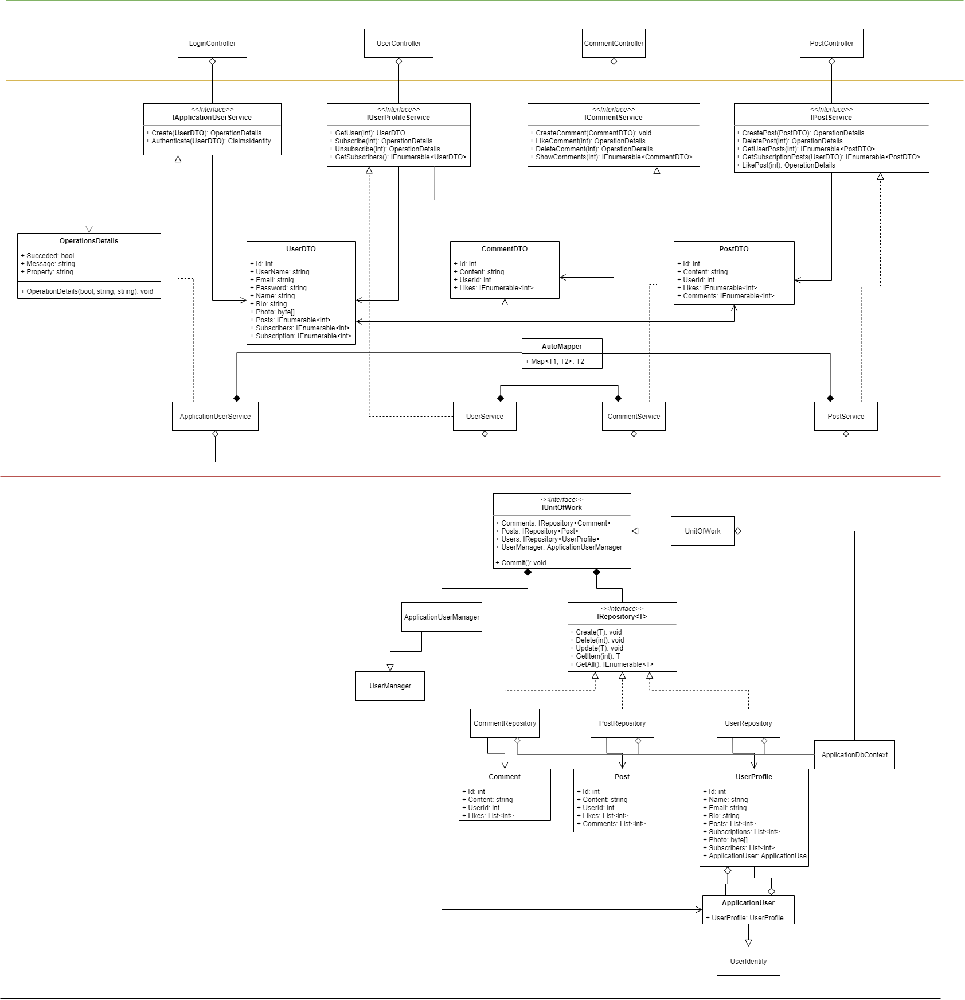

Тема: УСПАДКУВАННЯ. АБСТРАКТНІ КЛАСИ. ІНТЕРФЕЙСИ
Мета: Придбати практичні навички роботи створення базовового та похідних класів, перевизначення методів у класі, методів перевантаження унарних, бінарних, логічних операторів, операторів порівняння.
- Постановка задачі:
- 1. Доповнити програмну реалізацію класів методами для перевантаження унарних, бінарних, логічних операторів, операторів порівняння.
- 2. Протестувати програму. Зробити висновки.
Місце розташування проекту: посилання.
Середовище розробки: в ході реалізації проекту в основому використовуються дві програми - Visual Studio 2019 та Visual Studio Code.
Діаграма класів
Базові та похідні класи. Абстрактні класи та віртуальні методи
Оскільки в мене в проекті немає місця, де потрібно добавити подібний фунціонал, то для виконання даної лабораторної роботи я створив додаткові два класи.
Код абстрактного класу
Код класу з віртуальним методом
Код класу з перевантаженням методу
Використання
Вивід
Upcasting - Downcasting
Приклад використання
Вивід
інтерфейси

Файлова структура проекту

Висновок
В ході виконання даної лабораторної роботи я закріпив свої знання та навички в створенні базових та похідних класів, про нюанси роботи з ними, та що варто знати, про те, як правильно прописувати інтерфейси та абстрактні класи. Також закріпив свої знання про те, як правильно робити upcasting і downcasting.